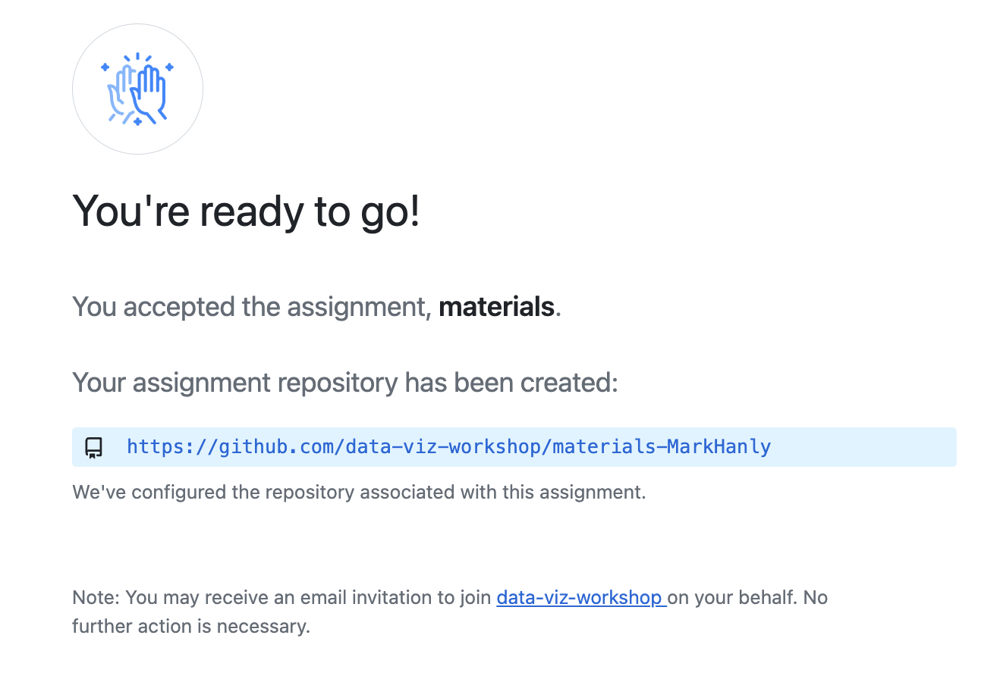
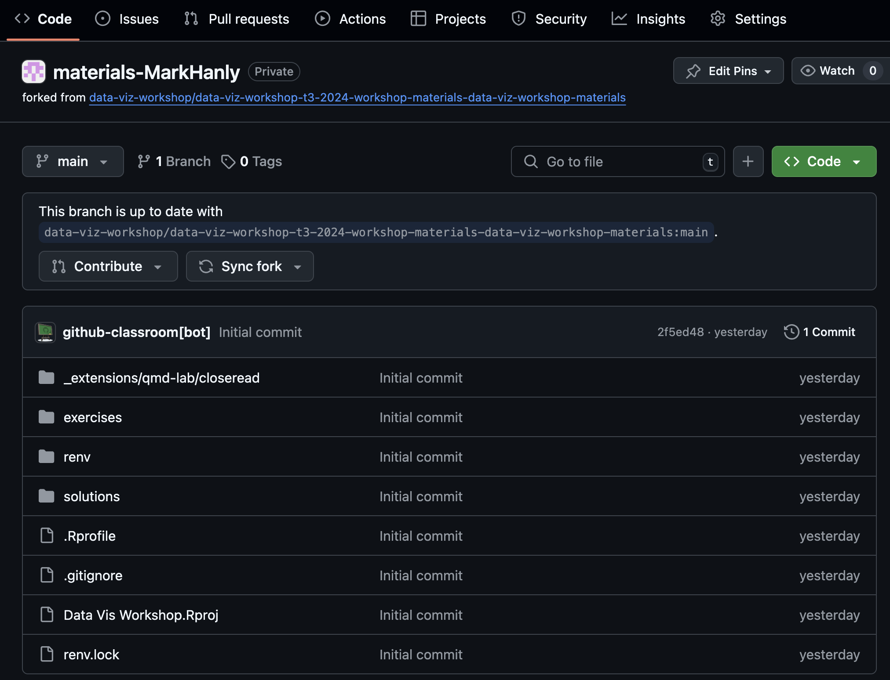
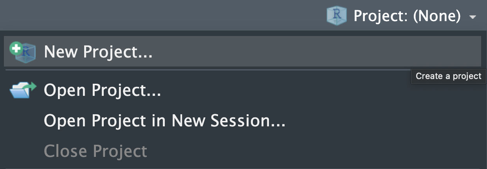
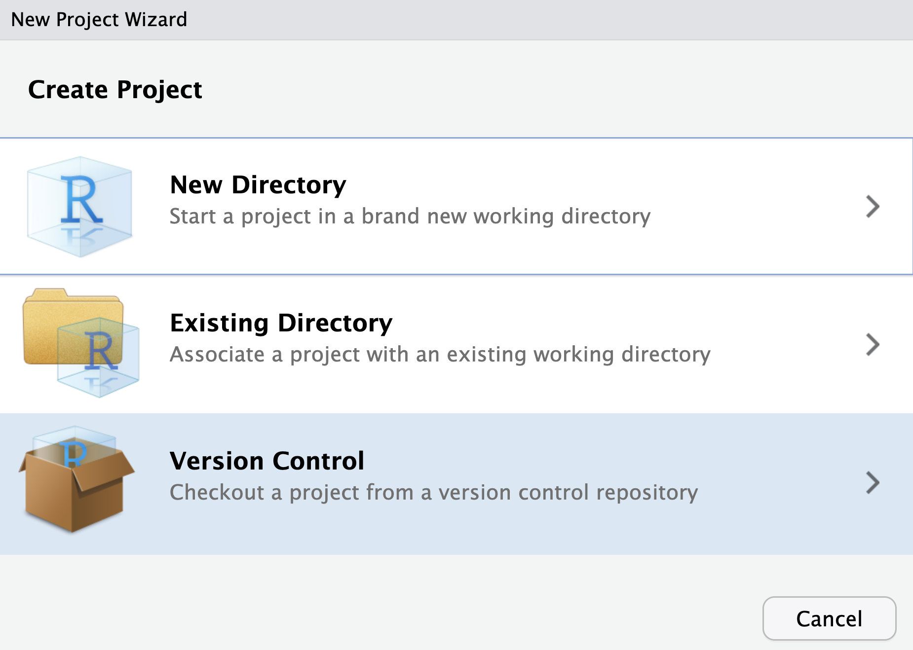
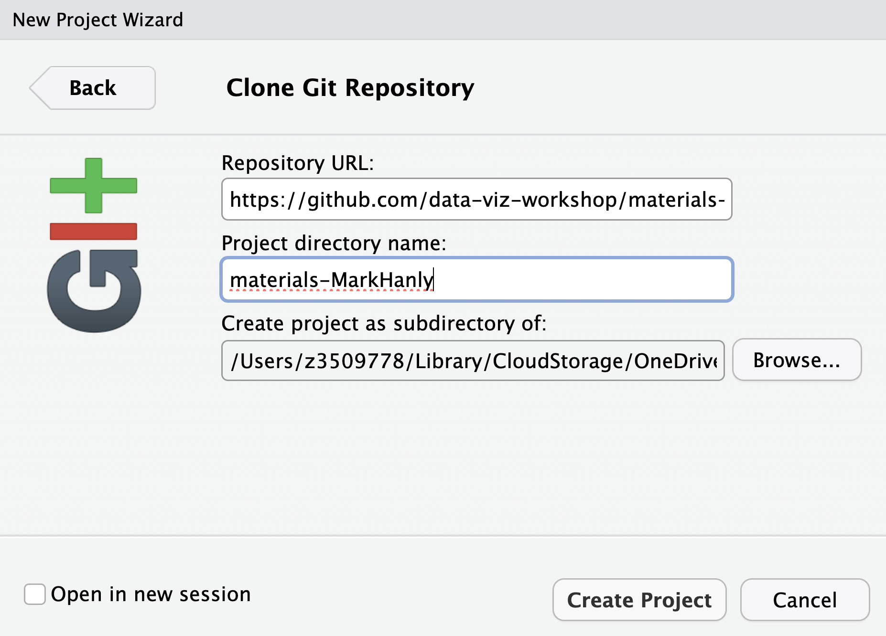
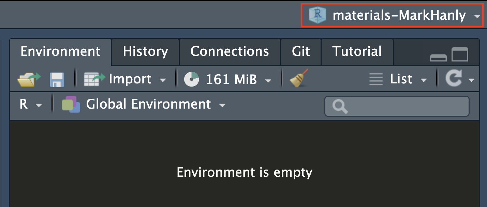
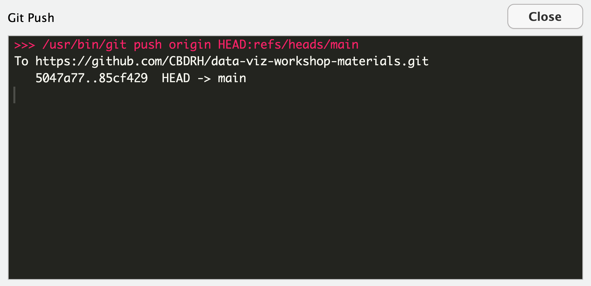
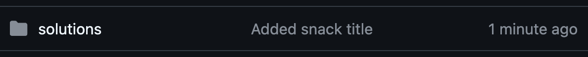
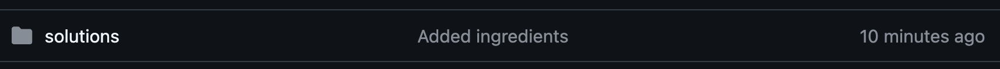
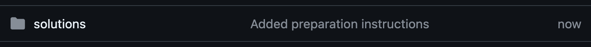

0-practice-git-workflow.txt
# My favourite snack
# Ingredients
# InstructionsIn this exercise you will:
Create a personal copy of the Materials Repo and clone this locally so that you have all the course materials stored on your laptop
Practice the git add-commit-push workflow so that you get a feel for working with git.

Illustrations from the Openscapes blog GitHub for supporting, contributing, and failing safely by Allison Horst and Julia Lowndes.
Click here and follow the instructions to create a personal fork of the workshop materials repo on Github.
You should see a message like the one below, except your repo will be tagged with your GitHub username https://github.com/data-viz-workshop/materials-<username>

Open this link on a browser and you will be taken to the repo on GitHub. There are a lot of files and folders here, the main files you will use are in the exercises and solutions folders.

Click on the Code button and copy-paste the HTTPS url to your clipboard.

In RStudio, create a new project by clicking in the top-right hand corner and selecting New Project…

Select Version Control then Git.


Paste your repo url in the Repository URL field.

The Project directory name will be the name of the folder on your laptop so choose something sensible, e.g. Materials.
Finally, select the field Create project as subdirectory of. This is where the Materials folder will be stored on your laptop. If you move the folder later it will break the link with GitHub, that can be fixed but it is easier to just choose somewhere sensible now.
If you have successfully completed this step you should see the name of your project in RStudio

To complete this exercise you will write a short “code” file that summarises your favourite snack. There are three necessary bits of information to include in this file:
After you add each bit of information you will run through the complete git add-commit-push cycle, and confirm that you can see the changes to your File pushed to GitHub.
Our analytic code files are essentially lists of instructions, just like a recipe!
Using the RStudio Files Pane, navigate to the folder exercises/1-code and open the file 0-practice-git-workflow.txt

The file should look like this. We are going to use this template to practice the git workflow.
0-practice-git-workflow.txt
# My favourite snack
# Ingredients
# Instructions‘Pil pil’ is a word used in Spanish and Basque cuisines that describes a sauce made with garlic and chilli infused in hot olive oil. Some say ‘pil pil’ is the sound of popping garlic as it cooks in the hot oil.
0-practice-git-workflow.txt
# My favourite snack
Gambas Pil Pil (Garlic and Chilli Prawns)
# Ingredients
# InstructionsIn the RStudio Git Pane, tick the box next to the 0-practice-git-workflow.txt. This adds your edited file to the staging area.



If this has all worked smoothly you should see your recent commit message when you view your repo on GitHub

0-practice-git-workflow.txt
# My favourite snack
Gambas Pil Pil (Garlic and Chilli Prawns)
# Ingredients
- Prawns
- Garlic
- Chilli
- Oil
- Bread
# Instructions
0-practice-git-workflow.txt
# My favourite snack
Gambas Pil Pil (Garlic and Chilli Prawns)
# Ingredients
- Prawns
- Garlic
- Chilli
- Oil
- Parsley
- Bread
# Instructions
- Heat the oil with the garlic and chilli
- Add the prawns
- Garnish with parsley
- Serve with bread
Made it this far? Nailed it!